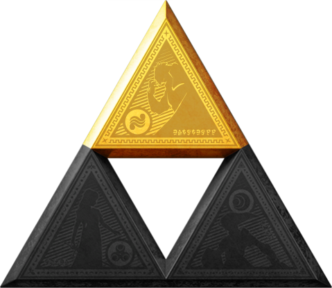

Power

Description
Today we are going to learn how to earn the Triforce of Power. Please be careful when doing this, as it is very likely you will destroy
Hyrule and make a LOT of enemies in the process. Tread lightly.
Ingredients/Requirements
- Be Ganon, King of the Gerudo
- Have an insatiable thirst for power and destruction
- Posess the ability to lie and diecieve, you are the king of theives after all...
- Sick black armor - you will be under constant attack
- A map of Hyrule, you've got a lot of ground to cover with all the damage you are about to do
- A cast of evil henchmen to do your bidding
The Mission
- Poison the Great Deku Tree
- Place a stone in front of Dodongo Cavern, starving the Goron. Make one of the dodongos big and mean
- Infect Lord Jabu with one of your devilish creations
- Set up a meeting with the King of Hyrule - convince him you are benevolent and that you wish to work together
- Pay no attention to the meddling kids spying on you through the window. They are of no concern to you
- With all of this completed, continue your desctive ways for approximately 5-7 years
- Build a sick castle with a bunch of lava around it
- If you are able to complete this, you are in fact Ganon, and you posess the Triforce of Power